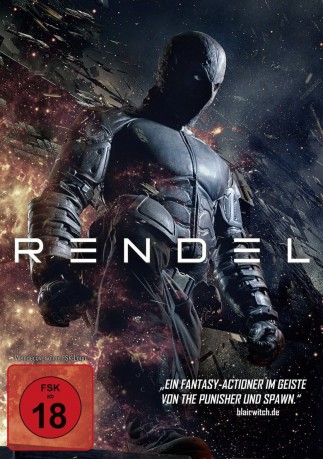

#7606 Rendel
 gesehen am 21.12.2017
gesehen am 21.12.2017
 
 IMDB-Wertung: 4.8 / 10
IMDB-Wertung: 4.8 / 10  Metascore: 0
Metascore: 0 
Mikkeli, Finnland: In der Großstadt herrschen Korruption, Tod und Gewalt. Der unberechenbare Rotikka, Anführer eines gewaltbereiten Clans, hält die Zügel fest in seinen Händen. Die florierenden kriminellen Aktivitäten werden gestört, als ein maskierter Einzelgänger in der Stadt auftaucht und reihenweise Rotikkas Handlanger außer Gefecht setzt. Der Kämpfer, der sich selbst Rendel nennt, geht dabei äußerst brutal zur Sache. Kann das Team von internationalen Killern, welches von Rotikka beauftragt wird, Rendel zur Strecke bringen und seine Beweggründe herausfinden?
Jahr: 2017
Dauer: 105 Minuten
FSK: 18
Land: Finnland Studio: Black Lion PicturesTonspuren:
Untertitel:
Auflösung: 1080p (1920x808) Größe: 4474 MB
Genre: Action, Fantasy, Krimi
Regisseur: Jesse Haaja
Drehbuch: Jesse Haaja
Soundtrack:
Darsteller:
- Bianca Bradey als Stacy
- Alina Tomnikov als Marla
- Sheila Shah als Julia
- Enni Ojutkangas als Waiter
- Jesse Haaja als Bartender
- Kristofer Gummerus als Rendel / Rämö
- Johnny Vivash als Radek
- Michael Hall als Mike
- Tero Salenius als Kurikka
- Markku Olkkonen als Man in the bar
- Matti Onnismaa als Mr. Erola
- Reino Nordin als Reikki
- Aake Kalliala als Marsalkka
- Sami Huhtala als Taneli
- Anu Palevaara als Huora
- Rami Rusinen als Rotikka
- Zaani als Corrupt cop
- Anton Jokikunnas als Naked man
- Lauri Laukkanen als Camera man
- Ari Karhunen als Pizza delivery guy
- Renne Korppila als Lahtaaja
- Marko Pesonen als Oskari
- Arto Rantakokko als Thug at the warehouse
- Jonna Keränen als Nurse 2
- Minttu Tamski als Anette
- Teemu Karvonen als Dealer
- Janne Turkki als Man at the waterfall
- Ville Kiljunen als Boss
- Antti Kalmeenoja als Vala man
- Michael Majalahti als Jimmy
- Jeremias Yli-Kortesniemi als Thug at the warehouse
- Timo Kleemola als Vala man
- Aki Partanen als Vala man at 221
- Esa Haverinen als Employer
- Tanja Arffman als News anchor
- Tuomas Hautamäki als Tuxedo man
- Fanni Pekkala als Little girl
- Samuli Tenkanen als Thug at the warehouse
- Nina Suokko als Woman from the club #2
- Mikko Asunta als Gunman
- Olli Heikkinen als Hot dog guy
- Mikko Härkönen als Agent
- Pete Niemelä als Kake
- Tuomo Meriläinen als Employer
- Marko Tolonen als Vala man at 221
- Jaana Komulainen-Lepistö als Nurse 1
- Jussi Hopiavuori als Employer
- Toivo Rolser als Warden
- Marko Karvonen als Employer
- Juha-Matti Halonen als Thief
Datei: X:\FSK18-2017\Rendel (2017, FSK18, 1920x808).mkv seit 23.11.2017
Festplatte: FSK18
 Es gibt insgesamt 24 Filme in der Gruppe 'FSK18-2017'
Es gibt insgesamt 24 Filme in der Gruppe 'FSK18-2017'